MikuAM History!
pxls canvas 55 - Hatsune Miku - defiddle by TheBestYouHaveEverSeen
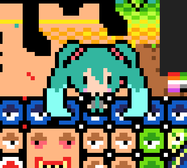
pxls canvas 56 - Hatsune Miku - defiddle by TheBestYouHaveEverSeen
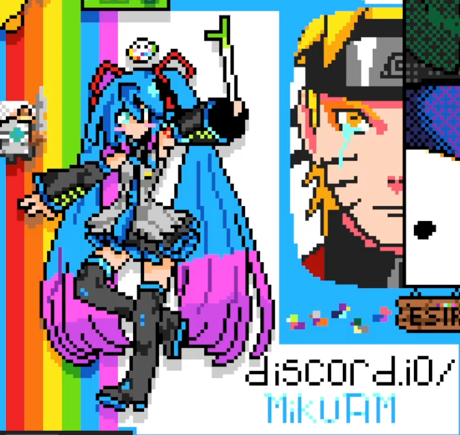
pxls canvas 56a - Osage-chan (Lagtrain) - defiddle by Eve, additional work done by tasakurain
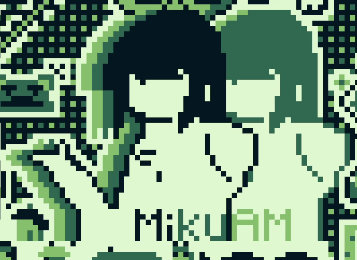
pxls canvas 57 - Hatsune Miku (Tõryansé) - defiddle by Eve - MikuAM-Trollge Conflict took place
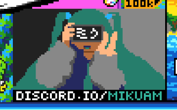
pxls canvas 58 - Hatsune Miku - defiddle by TheBestYouHaveEverSeen
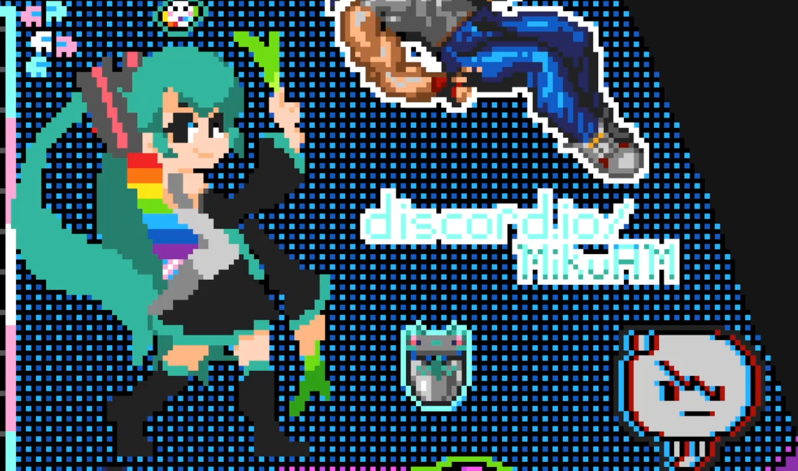
pxls canvas 59 - Hatsune Miku (I Wanna Be The LoveTrap) - defiddle by aliceNobodi - w/ IWBTG pxls - GSm Sunray Trolling took place
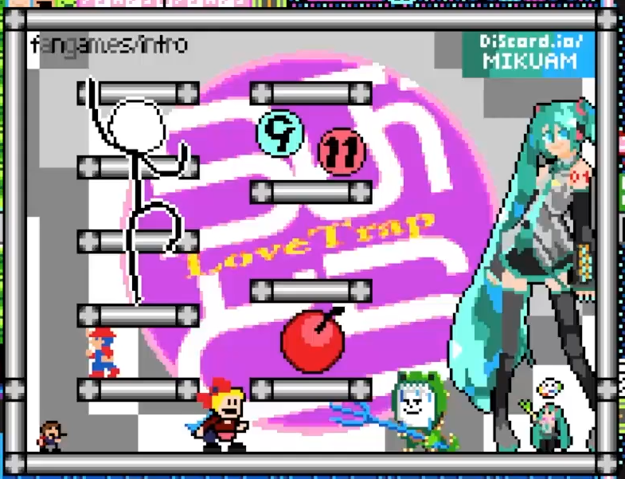
pxls canvas 60 - Hatsune Miku (1year) - defiddle by Eve - part of Space Collab - Space Collab Incident took place
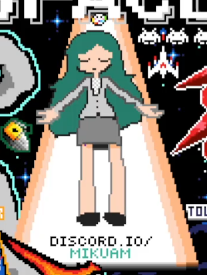
pxls canvas 60a - Hatsune Miku (Nightcord At 25:00) - defiddle by Eve - x190 - SSPG conflict took place
pxls canvas 61 - Kagamine Rin (KOISURU☆BEAM) - defiddle by TheBestYouHaveEverSeen - The Chicanery took place
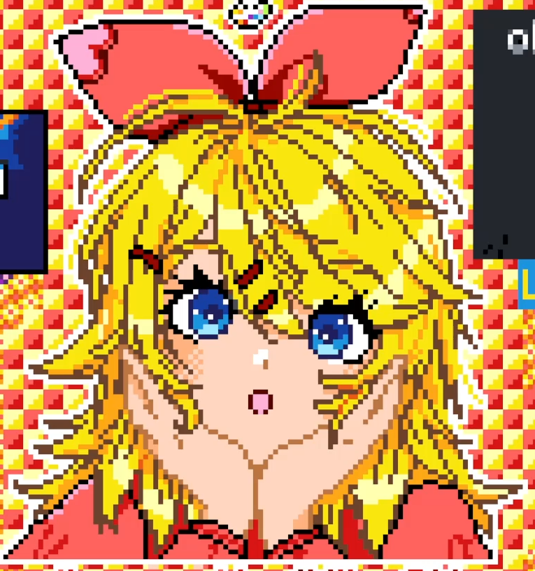
pxls canvas 62 - Osage-chan (Sinktank) - defiddle by Eve
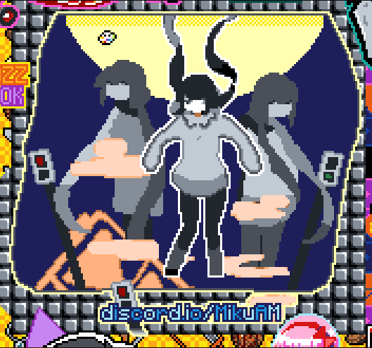
pxls canvas 64 - Kagamine Len (+ ♂) - w/ Watermelon Syndicate - defiddle by Eve
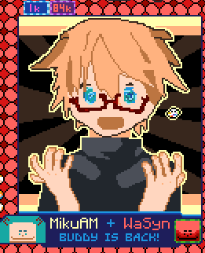
pxls canvas 65 - KAITO, others - defiddle by Eve
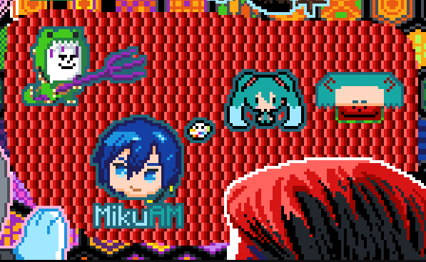
pxls canvas 66 - Hatsune Miku ((Not) a Devil) - defiddle by Eve
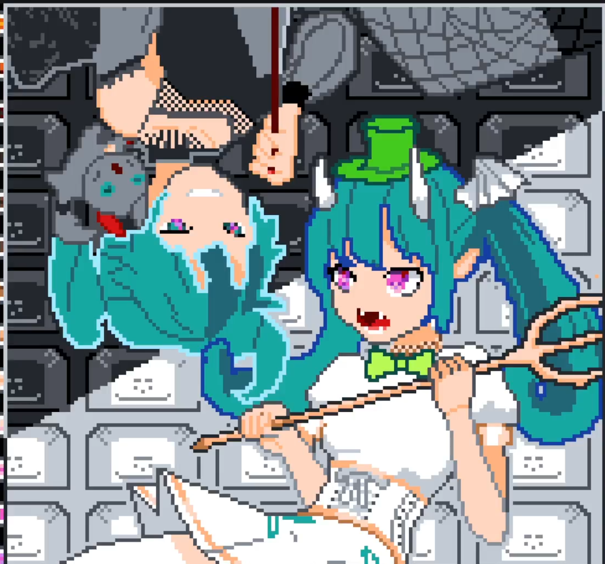
pxls canvas 67 - Akane-chan (Seyana.) - defiddle by ocho
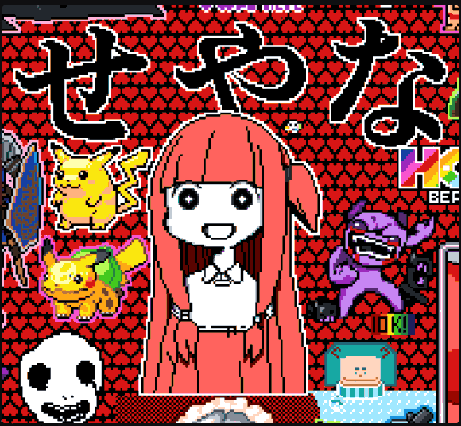
pxls canvas 69 - Hatsune Miku, others - w/ Lunes - defiddle by c1ov3r
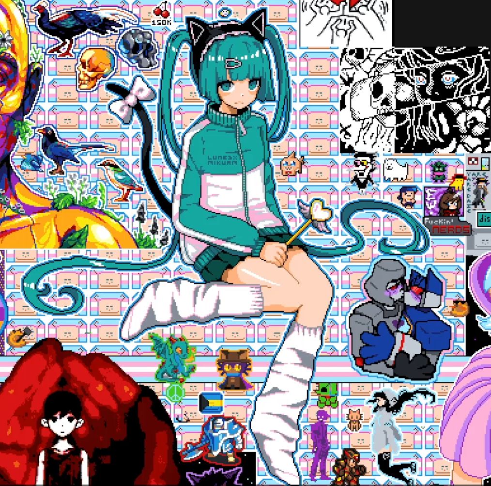
pxls canvas 70 - Hatsune Miku - defiddle by kaisenramen
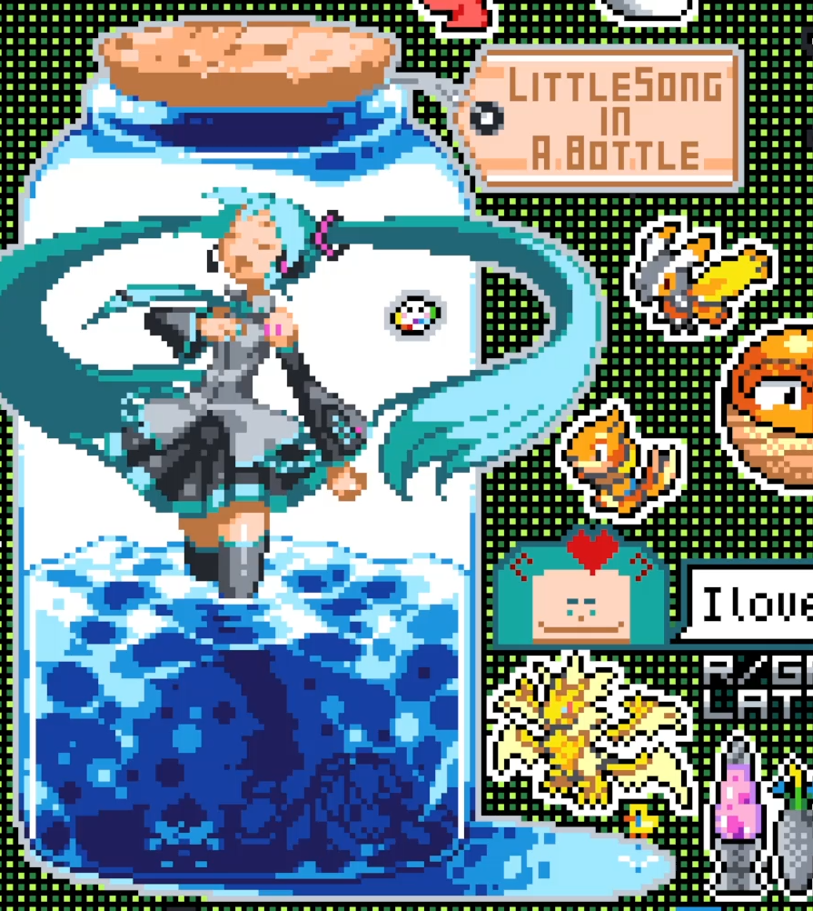
pxls canvas 71 - Hatsune Miku - w/ r/PlacePride - defiddle by Anonymous, additional work done by Eve, reissecup, ryvengebuzz
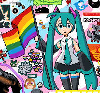
pxls canvas 78 - Hatsune Miku (Strobe Light) - defiddle by Eve
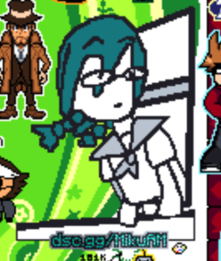
pxls canvas 85 - Hatsune Miku (Miku Expo 2024) - defiddle by Eve - Miku Expo Raid took place
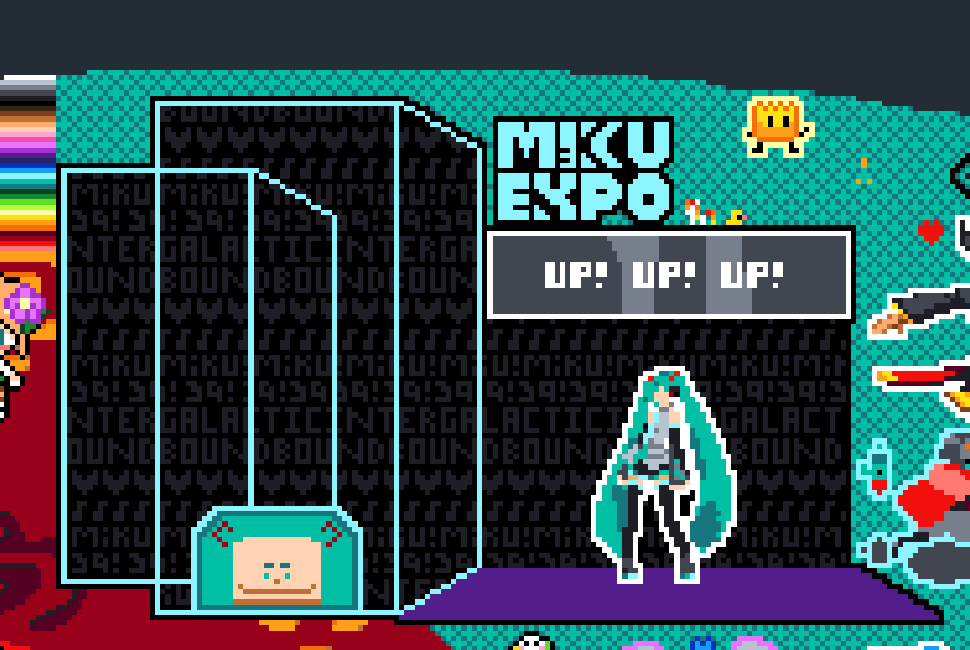